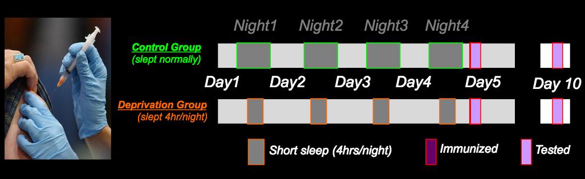
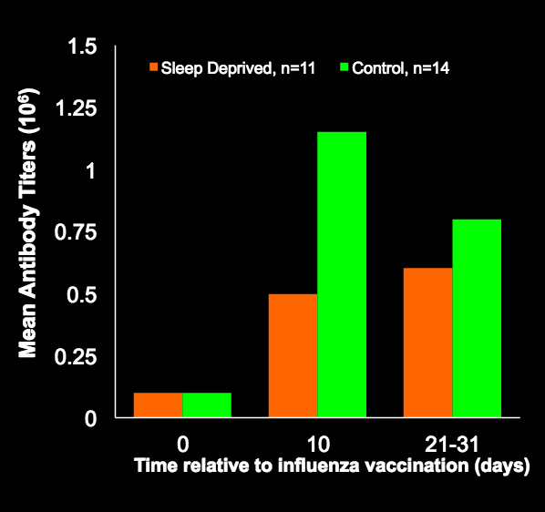
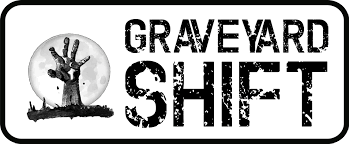

Sleep deprivation can render your body more susceptible to disease by weakening your immune system.
The study consisted of a sleep deprived group and a regular sleep group. Both sustained their sleeping schedules for 10 days and were immunized after the 4th night.
On the 10th day, both groups were tested for their antibody response. The group getting 4 hours of sleep a night (constitutes sleep deprivation) exhibited an immune response less than 50% of a normal antibody response. This indicates that sleep deprivation weakens your immune system making you more susceptible to disease.
Images Courtesy of Professor Walker's Lecture 11 slides
Another study showed that continued sleep deprivation led to a 70% reduction in natural killer cells. A high natural killer cell count are vital in helping fight cancer. The results were so conclusive that the World Health Organization were compelled to declare "shift work" as a possible carcinogen.
Study citation: http://goo.gl/C7Pjlj